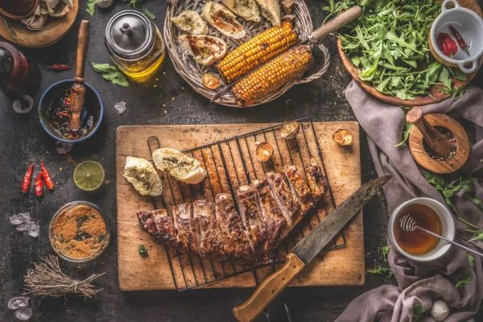

Churrascos
Churrasco é o prato feito à base de carne in natura ou processada, assada sobre o fogo
ou brasas,
com a utilização de estacas de madeira ou metal, ou de grelhas Mas o que o
churrasco tem em comum é o que representa: um momento de partilha, de conversas,
risadas e encontros. Ou seja, a cultura do churrasco é passada de geração para geração,
brnela, vem
junto as histórias da família e dos amigos ao redor do fogo.
